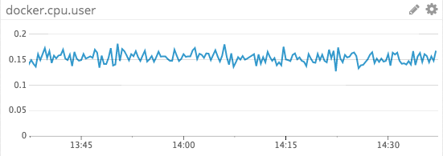

Convox
Get metrics from Convox in real time to

To capture metrics you need to...
# check out the repo
$ git clone https://github.com/convox-examples/dd-agent.git
$ cd dd-agent
# deploy the agent app and secret
$ convox apps create
$ convox env set API_KEY=<your api key>
$ convox deploy
$ convox scale agent --count=3 --cpu=10 --memory=128